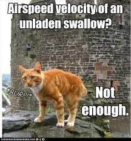

Reflections
- I've learned to think a little more abstractly and focus on how objects relate to one another, rather than what they do. It makes your code easier to maintain.
- I've learned that the front end and back end work hand in hand. Whatever one does has an effect on the other, and they must work together to create a finished product.
- Encapsulation is important because it helps fend off malicious users who try to access data that they shouldn't. It helps keep the methods and parts of an object private.
